Spatial Outputs
Results
The results present the final maps and charts generated for each pollutant.
The interpretation focuses on spatial concentration patterns, annual change,
land cover transition statistics and population exposure. Use the tabs to switch
between NO₂, PM2.5 and PM10.
NO₂ Concentration in Greece, December 2023
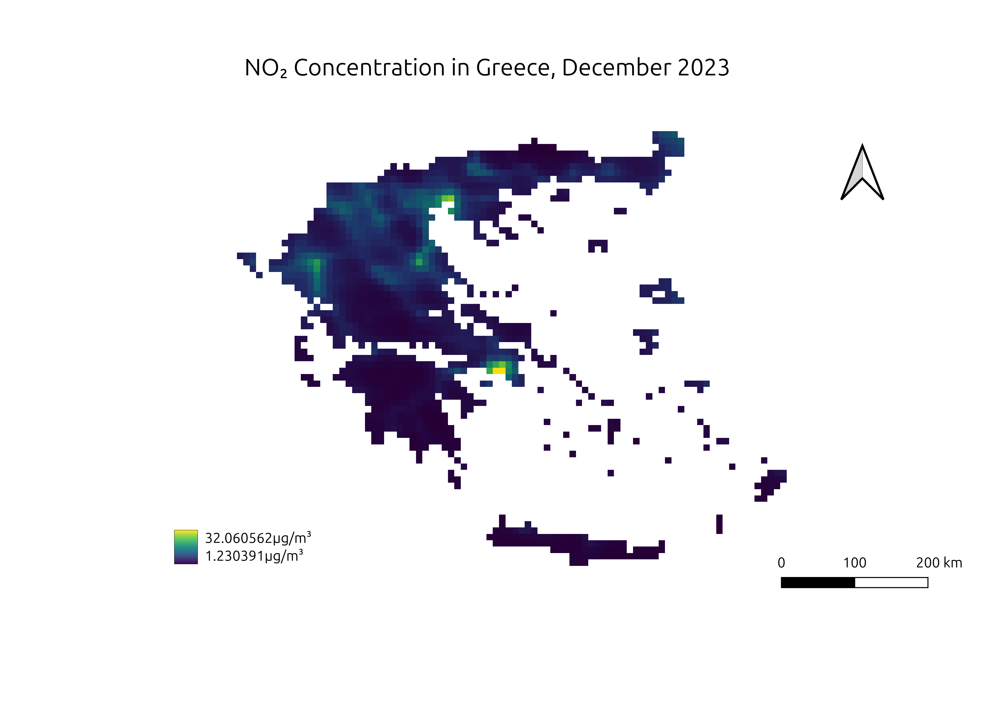
The December 2023 NO₂ map shows an uneven distribution across Greece. Higher
values appear around major urban and transport-related regions, especially the
Athens metropolitan area and parts of northern Greece, while many island and
rural regions show lower values. This monthly snapshot precedes the annual
average calculation.
Annual Average NO₂ Concentration, 2023
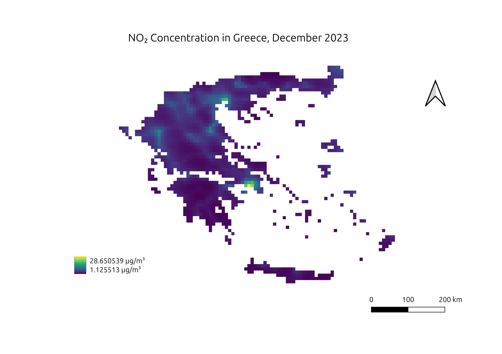
The annual average map highlights the stable spatial pattern of NO₂ in 2023.
Higher values concentrate around urbanised areas, while lower values spread
across rural and island regions. Compared with the December map, the annual
average smooths monthly fluctuations and is better suited to classification and
exposure analysis.
NO₂ Concentration Classes, 2023

The concentration class map divides annual average NO₂ into air quality classes.
Greece mainly contains Class 1, Class 2 and Class 3 values, with most of the
country in Class 1, indicating relatively low NO₂ levels. Class 2 and Class 3
areas are more limited and are mainly associated with urban regions.
NO₂ Annual Mean Aggregation Change, 2021–2023
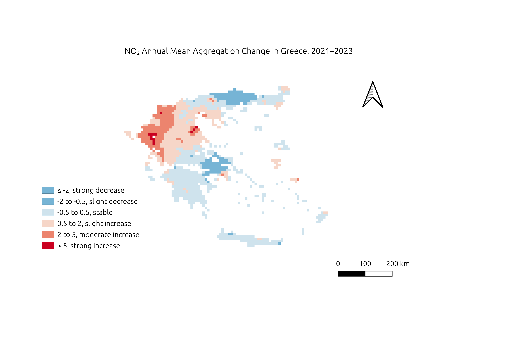
The NO₂ AMAC map shows both increases and decreases between 2021 and 2023.
Some regions show slight or moderate increases while others remain stable or
decline. Stronger changes appear in localised zones rather than across the whole
country, reflecting differences in urban activity, transport intensity and
regional emission patterns.
Built Area Change and NO₂ Change Statistics
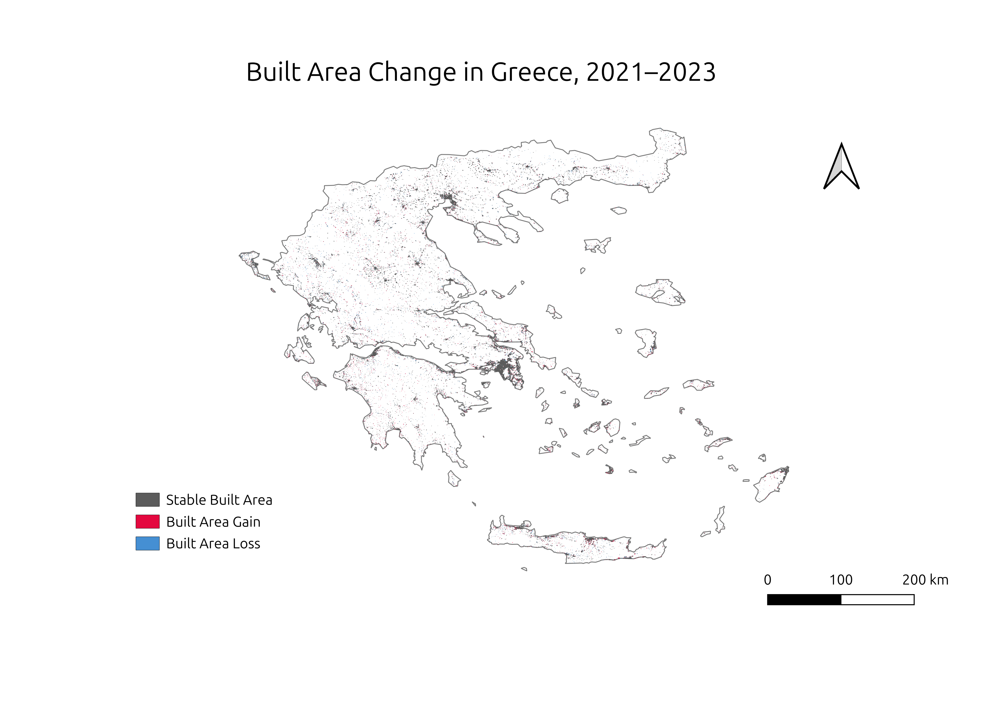
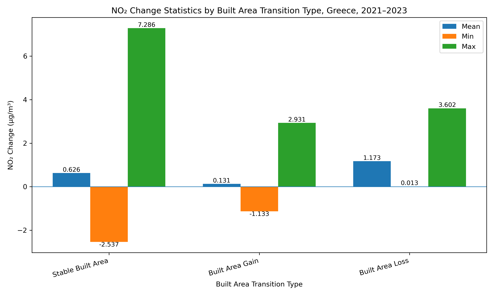
The built area change map identifies Stable Built Area, Built Area Gain and Built
Area Loss. Most built-up pixels are stable, while gain and loss areas are scattered.
The bar chart shows Built Area Loss with the highest mean NO₂ change (about
1.173 µg/m³), while Stable Built Area carries the highest maximum value, suggesting
persistent urban areas experienced strong localised NO₂ increases.
NO₂–Population Bivariate Exposure
The bivariate map combines NO₂ concentration class and population class at the
GAUL Level 2 scale. The first digit represents the NO₂ class, the second the
population class. Visible combinations include 13, 14, 23 and 35; the Class 35
area is especially important because it combines a higher NO₂ class with a high
population class.
Population Exposure to NO₂ Concentration Classes
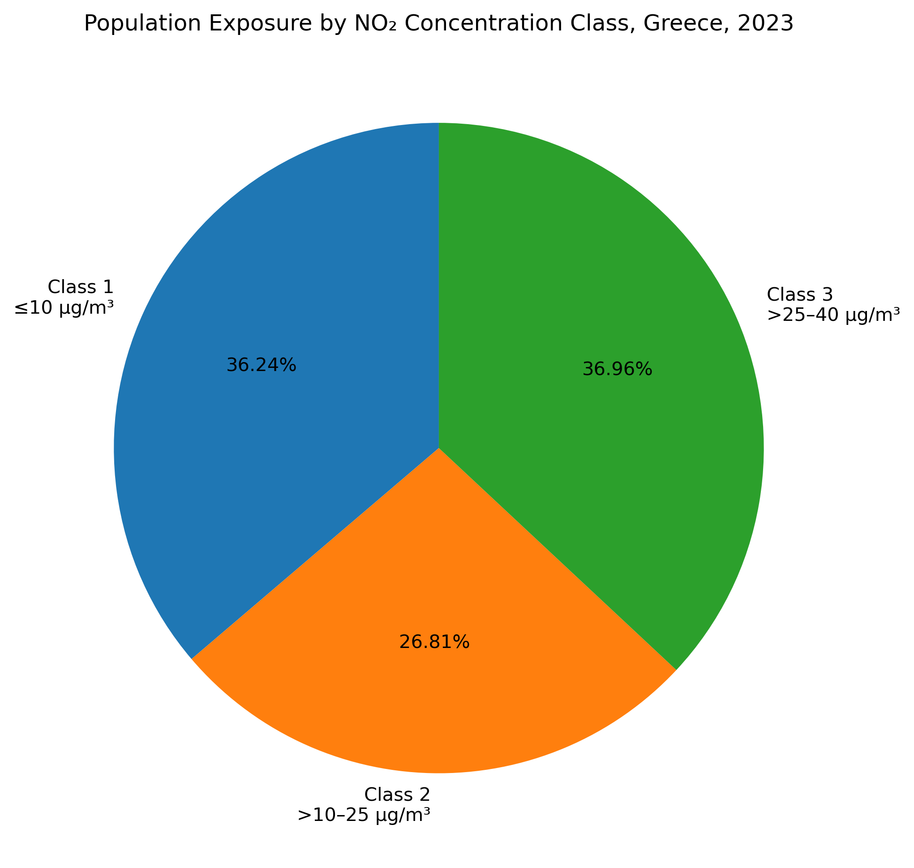
The exposure pie chart shows 36.24% of the population in Class 1, 26.81% in
Class 2 and 36.96% in Class 3. Although much of the territory is mapped as low
concentration, a considerable share of the population falls into higher NO₂
exposure classes, demonstrating why population-weighted exposure analysis is
necessary in addition to simple spatial mapping.
PM2.5 Concentration in Greece, December 2023
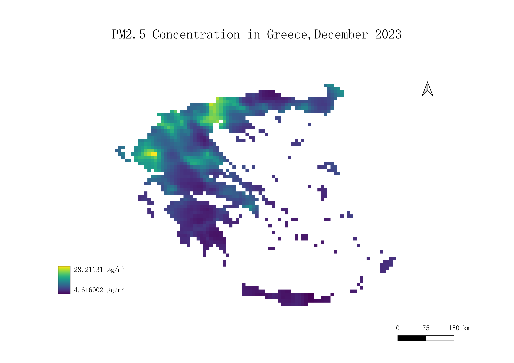
The December 2023 PM2.5 map shows higher concentrations around major urban and
transport-related areas, especially Athens and parts of northern Greece, while many
island and rural regions show lower values. Short-term PM2.5 is strongly influenced
by urban activity, traffic intensity and regional emission sources.
Annual Average PM2.5 Concentration, 2023
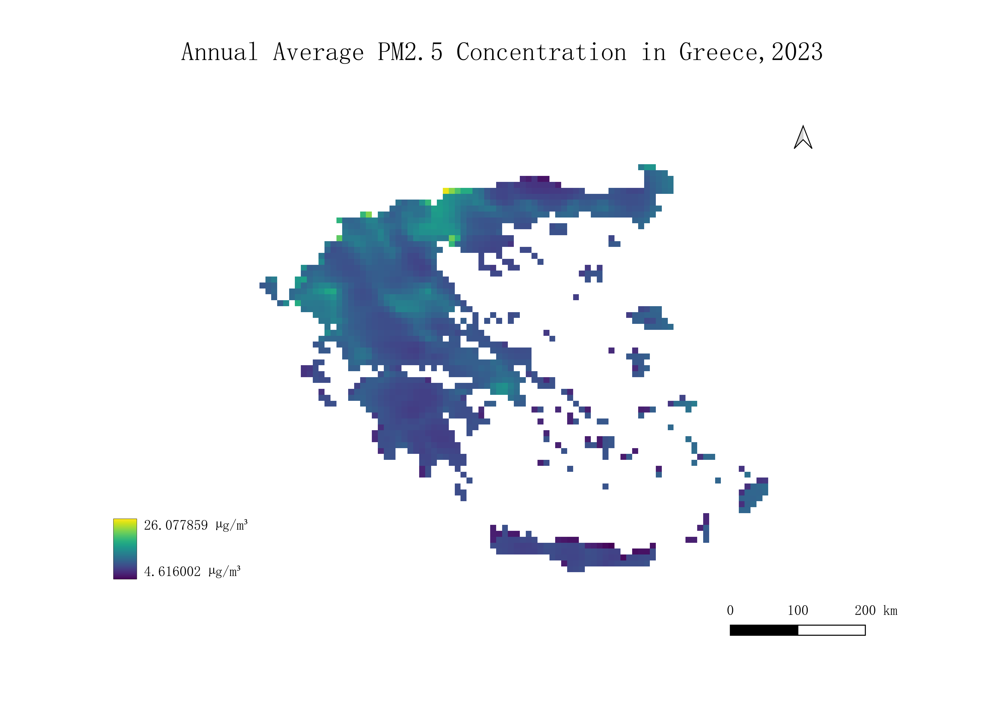
The annual average map shows the highest values concentrated around large urban
areas, especially the Athens region, with lower values in less urbanised mainland
areas and many islands. The annual average smooths short-term fluctuations and
highlights the clear contrast between urbanised and non-urbanised areas.
PM2.5 Concentration Classes, 2023
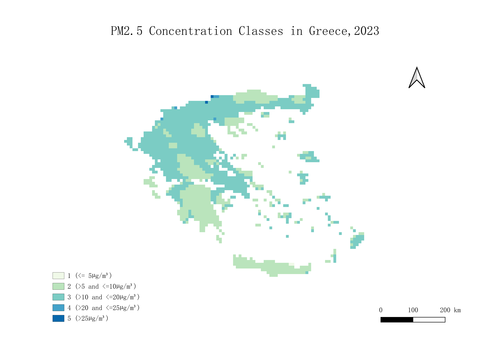
The class map shows mainly Class 1, Class 2 and Class 3, with most of the country
in Class 2 and Class 3 (between 5 and 20 µg/m³). Class 1 areas are limited, mainly
around specific islands and high-altitude ecosystems. This classification provides
the pollutant input for the bivariate exposure map.
PM2.5 Annual Mean Aggregation Change, 2021–2023
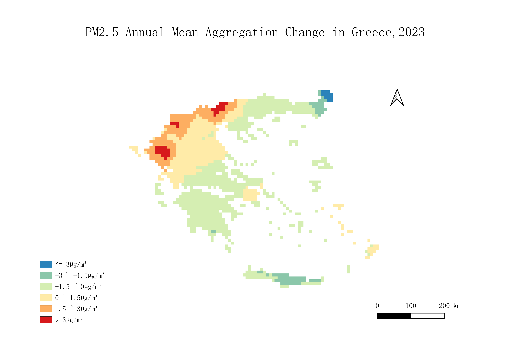
The PM2.5 AMAC map shows both increases and decreases. Western Greece forms a
distinct increase hotspot, while eastern administrative regions and coastal plains
show neutral to stabilising trends (0 to −1.5 µg/m³). The change is spatially
uneven, showing not only where PM2.5 was high in 2023 but where conditions shifted
since 2021.
PM2.5 Change Statistics by Crop Area Transition
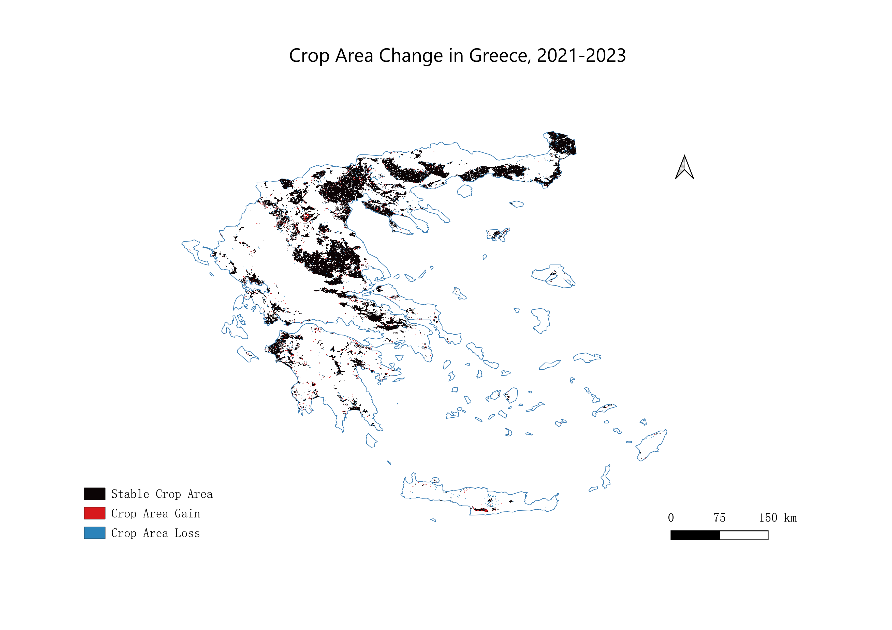
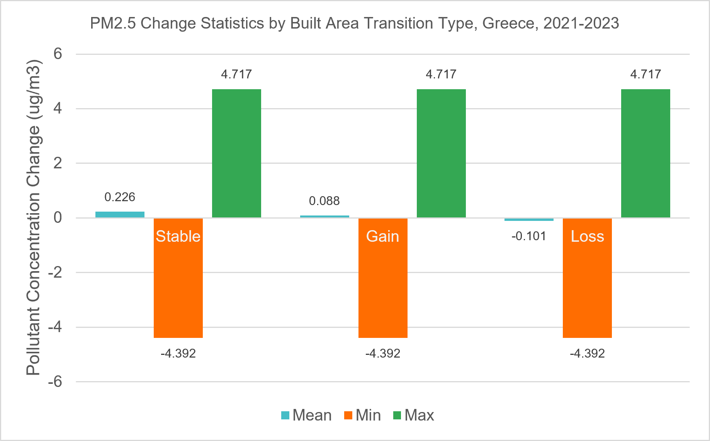
Using crop area transitions as zones, Stable Crop Area shows a mean PM2.5 change of
about 0.226 µg/m³, Crop Area Gain about 0.088 µg/m³, and Crop Area Loss a negative
mean of −0.101 µg/m³. PM2.5 grew least in newly gained crop cover, a relative
buffering signature, while all classes share local bounds from −4.392 to
+4.717 µg/m³.
Crop Gain and Loss Percentage and Area Statistics
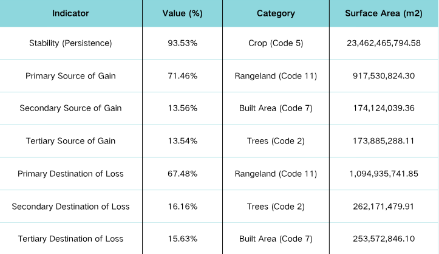
The crop gain and loss statistics summarise how much agricultural land was gained or
lost between 2021 and 2023 across different transition categories. The chart presents
both the percentage share and the absolute area for each transition type, giving a
quantitative basis for interpreting the PM2.5 zonal statistics above.
PM2.5–Population Bivariate Exposure
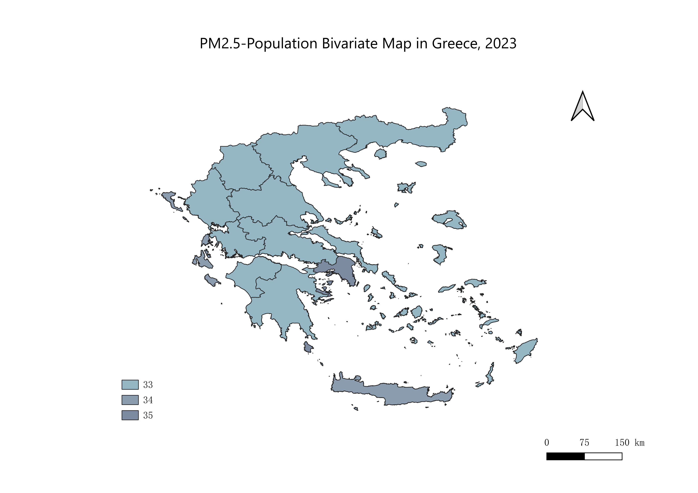

The bivariate map combines PM2.5 class and population class at the administrative
zone level. Visible combinations include 33, 34 and 35: several regions share a
baseline Class 3 pollution level but differ in demographic weight. The Class 35
areas are especially important, capturing critical urban centres such as Athens.
Population Exposure to PM2.5 Concentration Classes
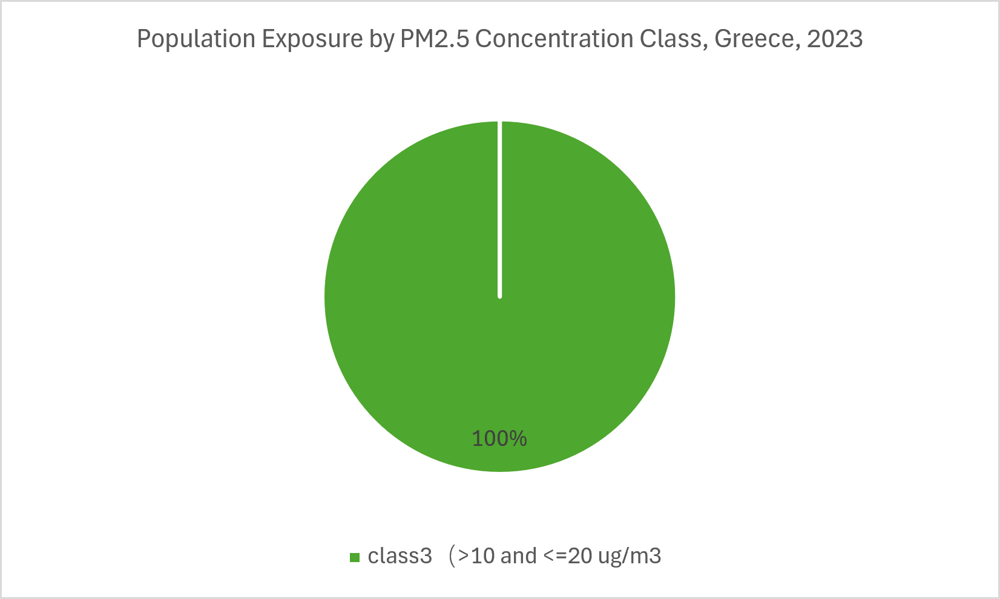
The exposure chart shows essentially the entire calculated population in Class 3
(greater than 10 and up to 20 µg/m³), because this regulatory tier covers the
populated provincial zones uniformly. Even though much of the territory maps as
lower concentration, population-weighted analysis reveals widespread exposure to
the higher class.
PM10 Concentration in Greece, December 2023
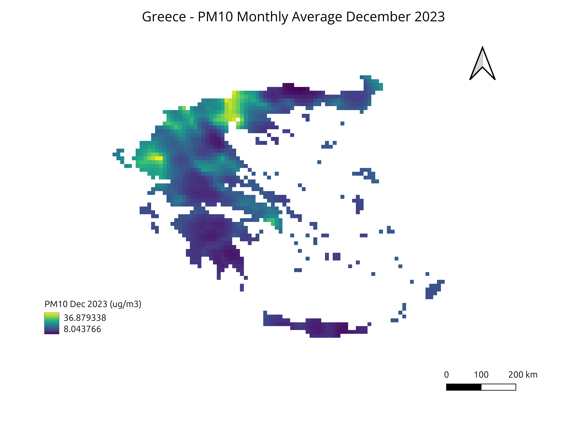
The December 2023 PM10 map shows higher values mainly in northern and central
Greece, where urban heating, road traffic, agriculture and dust resuspension raise
winter levels. Thessaloniki and the Thessaly plain stand out, while coastal and
island areas benefit from sea-breeze dispersion.
Annual Average PM10 Concentration, 2023
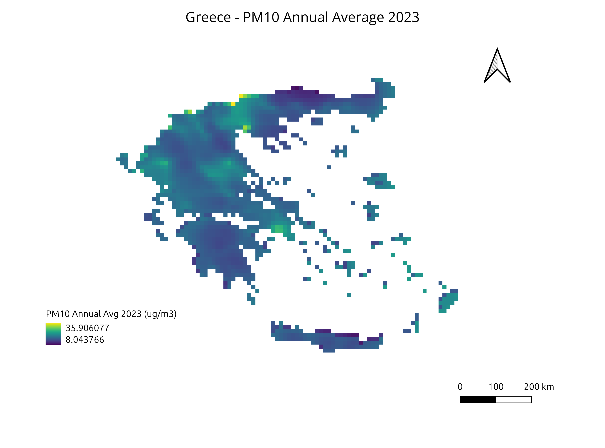
The annual average map concentrates the highest values in northern Greece, around
Thessaloniki, the Thessaly plain and Central Macedonia, driven by industry, traffic,
construction and agricultural burning. The Greater Athens area is also elevated,
while southern Greece and the Aegean islands generally show lower annual averages.
PM10 Concentration Classes, 2023
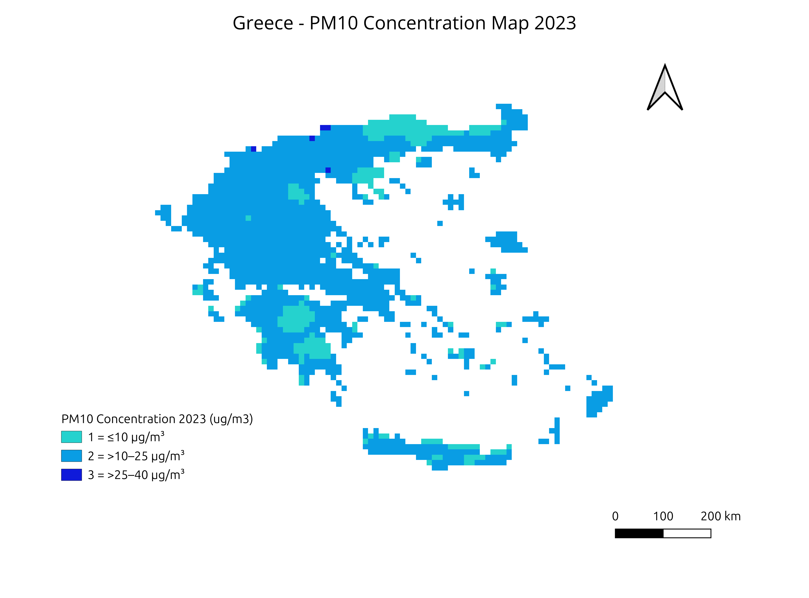
The class map shows mainly Class 1, Class 2 and Class 3, with Class 4 and Class 5
nearly absent. Class 1 covers mountainous, island and southern coastal areas;
Class 2 dominates mid-sized urban zones and agricultural lowlands; and Class 3
appears in the most urbanised and industrialised areas around Thessaloniki and
Greater Athens.
PM10 Annual Mean Aggregation Change, 2021–2023
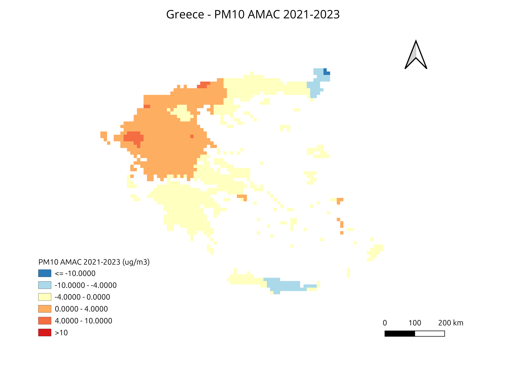
The PM10 AMAC map shows increases in parts of northern and central Greece, linked to
expanded construction, new road infrastructure and agricultural land disturbance,
while parts of Attica and several islands show slight decreases. The pattern is
spatially heterogeneous, driven by local activity and land use rather than a uniform
national trend.
PM10 Zonal Statistics by Built Area Transition
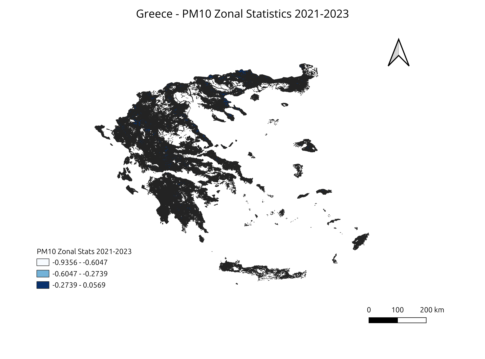
Using built area transitions as zones, Built Area Gain shows the highest mean PM10
change, reflecting increased particulate matter from ground disturbance and
construction machinery. Stable Built Area shows a moderate mean change, while Built
Area Loss shows the smallest or slightly negative mean, consistent with reduced dust
generation where hard surfaces were removed.
PM10–Population Bivariate Exposure
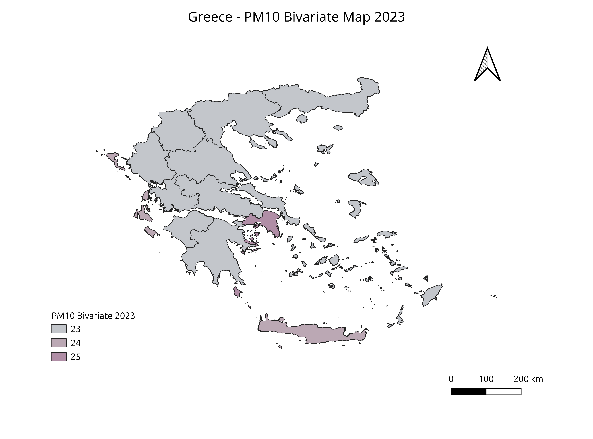

The bivariate map combines PM10 class and population class. Zones high in both
dimensions mark the greatest public-health concern and cluster around Thessaloniki
and metropolitan Athens. Northern peripheral zones show elevated PM10 but smaller
populations, while rural and island zones are low in both dimensions.